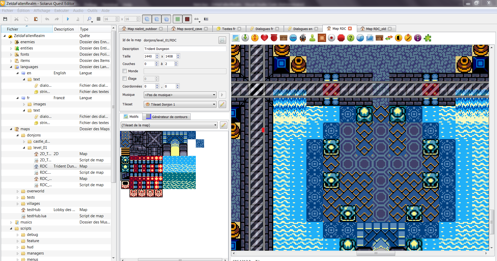
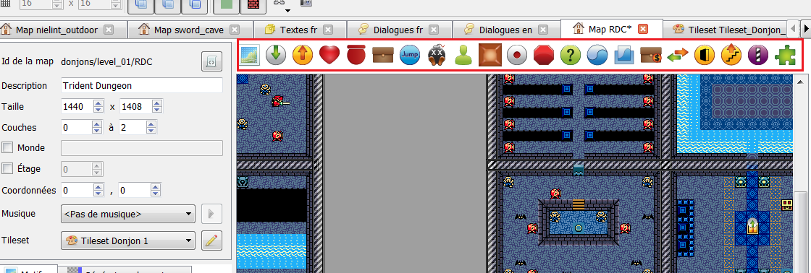

Celle de droite n'est présente qu'une fois, mais celle de droite à été répétée pour créer le motif du sol.
Les maps sont les environements où Link évoluera dans le jeu. Elles sont donc fondamentales à son fonctionnement.
Les maps sont composées d'un décor "inerte" (donc à peu de chose près, une image de fond et des éléments de terrain), les tiles ; et d'entités dynamiques généralement contrôlées par un script (dont Link !).
Dans ce guide je présenterai la méthodes à suivre pour créer et éditer des maps, placer les tiles, et les entités, etc.
Il n'est pas nécessaire d'utiliser un autre logiciel que l'éditeur solarus pour éditer les maps.
Avant de commencer, ouvrez donc l'éditeur solarus et ouvrez une map en double-cliquant dessus dans l'arborescence à gauche ; ou créez en une avec clic droit sur le dossier qui la contiendra (les maps sont toujours organisées en dossiers) -> Nouvelle map. 
A droite, l'aperçu de la map ; dans la partie centale haute vous pouvez modifier certains propriétés de votre map, telles que sa taille ou la musique qui se jouera dessus.
Comme expliqué précédemment, la map est composée d'un décor et d'éléments dynamiques posés dessus.
Le décor d'une map est composé d'une multitude d'images carrées, de taille 8x8 ou parfois plus, souvent répétés.
Exemple : sur cette image, on peut voir deux tiles différentes, de 16x16 pixels
Celle de droite n'est présente qu'une fois, mais celle de droite à été répétée pour créer le motif du sol.
Ces images sont regroupées sur des tilesets, de grandes images contenant toutes les tiles nécessaires à une map (on trouvera par exemple un tileset pour les maisons de base, un pour le donjon 1, etc). Avant de commencer à palcer des tiles sur une map et donc construire sond écor, il faut donc choisir le tileset, dans les propriétés de la map (au centre de l'écran).
(note : vous pouvez aussi aller voir le tileset directement, avec chaque tile et leurs propriétés dont on parlera plus tard, dans le dossier data/tilesets/, ou en cliquant sur l'icône crayon à côté du tileset sélectionné)
Une fois le tileset choisi, il apparaît en dessous de propriétés, juste à droite de l'aperçu de la map.
A partir de là, c'est très simple : on clique sur une tile pour la sélectionner, pour on clique sur la map là où on veut la placer.
Il existe quelques subtilités que j'ajouterait plus tard (mais n'hésitez pas à demander à Zuna en attendant), mais en voici quelques unes assez indispensables :
Il est important de noter que certains tiles sont animées (toutes les frames de l'animation sont présentes côte à côte sur le tileset).
Note : certaines tiles doivent parfois se chevaucher : pour décider de laquelle s'affiche au dessus, clic-droit -> mettre à l'arrière-plan / mettre au premier plan. (voir aussi le paragraphe "couches")
De plus, il s'avère qu'en réalité j'ai menti : les tiles ne sont pas uniquement un décor inerte ; certaines peuvent interagir avec les entités. En effet, les tiles possèdent un type de terrain (on ne peut d'ailleurs pas savoir le type de terrain d'une tile dans l'éditeur de map : pour savoir le type de terrain d'une tile, allez voir directement le tileset).
Ces types sont :
Les autres ont des effets plus particuliers, et sont assez explicites :
En effet, les maps se sont pas des environements entièrement 2D : les tiles peuvent être à différentes hauteurs, symbolisées par des couches/layers. Toutes les tiles sont par défaut à la couche 0, mais on peut changer ça avec un simple clic-droit.
Le système est assez simple, les tiles de la couche 1 s'affiche toujours au dessus de la couche 0 (modifier l'ordre des tiles avec clic-droit -> mettre à l'arrière-plan / mettre au premier plan n'a d'effet qu'au sein d'une même couche : mettre à l'arriere plan une tile de la couche 1 l'affichera sous les tiles de la couche 1 mais au dessus de toutes les tiles de la couche 0)
Nous y reviendront dans la partie dédiée, mais les entités se trouvent toujours sur une couche : si Link de trouve sur une couche, il y restera tant qu'il y a une tile Traversable sous ses pieds à la même couche que lui ; s'il se retrouve sur un tile avec Vide comme type de terrain, ou juste un endroit sans tile, il "tombera" (descendra les couches jusqu'à retomber sur une tile non vide ou à la couche 0.
(note: les entités sont toujours affichées au dessus des tiles de leur couche ; pour qu'une tile s'affiche par dessus Link, il faudra la placer sur une couche supérieure à celle où se trouvera Link)
Tandis que les tiles sont la partie inerte de la map, sa base, qui ne pourra pas changer pendant le jeu, les entités sont des objets capables de se déplacer, apparaître ou disparaître, effectuer diverses actions, pendant le jeu. Elles seront donc, contrairement aux tiles, contrôlables par les scripts du jeu.
Certaines seront gérées par le jeu, mais la plupart devront être placées sur la map au même titre que les tiles.
Il existe de nombreux types d'entités, qui seront décrits plus tard.
Pour placer des entités, cliquez simplement sur les icones correspondantes au dessus de l'aerçu de la map, puis placez les comme des tiles.

Lorsque vous placez une entité, une fenêtre s'affiche, vous permettant de modifier ses propriétés, notament son nom, sa taille (rarement utile) ou le sprite qui y est associé.
Les différents types d'entités sont :
Le personnage jouable, c'est à dire Link dans notre jeu. Cette entité existe toujours sur la map et est entièrement gérée par le jeu, vous n'avez donc pas beosin de la créer.
Entité n'ayant aucun effet. Elles sont cependant très utiles dans la mesure où elles permettent de "marquer" une position : lorsque Link doit être téléporté (ce qui inclut surtout le moment où il arrive sur la map) il est généralement envoyé vers une destination. Il est donc important de donner des noms explicites aux destinations.
Note : il est possible d'indiquer qu'une destination est la detination par défaut de la map : elle sera utilisée si on téléporte Link vers cette map sans spécifier de destination.
(note : il est possible de donner un sprite à une destination mais ce n'est généralement pas nécessaire)
Si Link se trouve sur un téléporteur, il sera envoyé vers la map et à la destination spécifiées dans les propriétés. Il est également possible de spécifier dans les propriétés le type de transition (fondu, immédiat ou scrolling. Le type scrolling est complexe à utiliser et nécessitera des explications supplémentaires). Ils seront généralement couplés avec une destination placée à peu près au même endroit. En effet, on les utilisera généralement pour une transition entre deux maps : par exemple, pour l'entrée d'une maison, à l'extérieur on mettra une destination nommée "maison_to_outdoor" et un téléporteur au niveau de la porte, une destination "from_outdoor" et un téléporteur à l'entrée de la maison ; le téléporteur de dehors envoyant donc vers la map de la maison à la destination "from_outdoor" et vice versa.
il est possible de donner un sprite à un téléporteur mais ce n'est généralement pas nécessaire)
Un item que link obtiendra s'il le touche. Le concept d'item est très large dans Solarus, dépendant de la manière dont c'est codé ça peut désigner autant un objet de l'inventaire qu'un réceptacle de coeur ou un rubis.
Les trésors sont en réalité rarement placés directement sur la map (+ souvent drop par des enemis ou trouvés dans un coffre).
Lorsque vous placez un trésor, vous devez choisir l'item dont il s'agit, mais également sa variante. La variante peut avoir de nombreuses significations (pour un rubis : sa couleur, pour l'épée, son niveau, etc). Des informations sur les différents items (dont la significations de leurs variantes) sont disponibles sur le google doc.
Les items que peuvent représenter les trésors ramassables regroupent :
(note : on ne donne pas de sprite à un trésor, le sprite de cette entité correspondant toujours à celui associé à l'item en question)
Objet pouvant être détruit par Link, comme un buisson coupable à l'épée par exemple.
En plus du sprite, il existe de nombreux paramètres pour les destructibles :
Objet contenant un trésor, spécifié dans les propriétés (avec sa variante), que Link obtiendra en l'ouvrant.
Il existe plusieurs modes d'ouverture :
Un enemi (no shit sherlock). Il faudra spécifier le "modèle d'enemi" (quel enemi c'est, en gros), et éventuellement la direction vers laquelle il regarde au lancement de la map. Les enemis sont généralement réinitialiés (et donc réapparaissent s'ils ont été tués) quand on change de map ou qu'on ferme le jeu : l'option "sauvegarder l'état" permet de ne pas les faire réapparaître, utile pour les boss surtout.
(note : on ne donne pas de sprite à un enemi, son script s'occupera de créer un sprite)
Un personnage avec qui Link pourra généralement interagir. Outre le sprite et la direction, il faudra spécifier l'effet de l'interaction :
languages/<langue>/dialogs dans l'arborescence à gauche de l'éditeur), pour les PNJ qui n'ont qu'un simple dialogue.Tehniquement, les séparateurs agissent comme "un obstacle pour la caméra" (c'est à dire la zone affichée à l'écran, qui doit suivre Link=. D'un point de vue plus pratique, un séparateur est une ligne que la caméra ne peut pas traverser, sauf si Link la traverse, auquel cas la caméra passera de l'autre côté avec une petite animation de scrolling.
(Lorsque Link vient de traverser un séparateur, sa position est sauvegardée en tant que "safe position" : c'est ici qu'il sera ramené s'il tombe dans un trou/lave/etc. Pour que le jeu ne change pas la "safe position" quand Link traverse un séparateur, il faut appliquer la propriété no_save au séparateur ; voir partie Map Features)
Un capteur est une entité qui s'activera quand link passera dessus. L'activation n'a pas d'effet direct par défaut, mais est utilisable par le script de la map, ou par les map features (voir partie dédiée).
Lorsque Link quitte le capteur, il n'est plus considéré comme activé : pour qu'un capteur reste activé après le départ de Link, lui appliquer la propriété "persistent" (voir partie Map Features)
Les blocs sont des entités immobiles, considérés comme des murs, et que Link peut pousser ou tirer (il est possible de spécifier si Link peut tirer ou pousser dans les propriétés de l'entité). Les blocs poussables présents dans tous les Zelda 2D, en gros.
Entité qu'il est possible d'activer. Par défaut elle s'active si Link marche dessus, mais il est possible d'indiquer dans les propriétés que l'interrupteur ne s'active que si un bloc est posé dessus).
De même que pour les capteurs, l'activation n'a pas d'effet direct par défaut, mais est utilisable par le script de la map, ou par les map features (voir partie dédiée).
Une entité programmable : plus précisément, elle n'a aucun effet mais peut avoir son propre script ou juste être utilisée par celui de la map. Il est possible (mais pas obligatoire) d'indiquer un sprite et surtout un script.
Les scripts disponibles (et utiles pour le mapping) sont :
target : <nom de l'entité cible> (voir partie Propriétés Custom plus bas). Lorsque Link interagira avec cette entité, ce sera comme si il avait interagi avec l'entité cible.direction : <ID de la direction> (les ID de directions vont de 0 pour la droite à 3 pour le bas). Elle s'arrête en touchant un mur.
(il est important de spécifier un sprite, sinon il s'agira simplement d'une plateforme invisible. Elle prendra la taille du sprite)Il est possible d'affecter des propriétés particulières aux entités, avec le nom qu'on veut. C'est d'ailleurs nécessaire pour contrôler les fonctionnement de la plupart des entités custom.
Pour cela, il faut regarder la partie "propriétés utilisateurs", en bas de la fenêtre de configuration des entités, cliquer sur le "+" vert, et spécifier le nom de la propriété et sa valeur.
Dans ce guide, je présenterai généralement les propriété avec le format nom : valeur.
Outre les entités custom, il peut être utile d'affecter des propriétés custom à d'autres types d'entité pour activer certaines fonctionnalités que j'ai créés pour le jeu, les map features.
La plupart du temps, il s'agit d'affecter une propriété à une entité afin de modifier son comportement. Elles sont surtout utile pour "programmer" le fonctionnement des donjons, mais sont utiles dans beaucoup d'autres situation.
A noter que les map features ne sont pas activées par défaut, pour pouvoir utiliser une map feature sur une map il faudra généralement on_started_ de son code.
(on accède au code d'une map en cliquant sur l'icone en haud à droite des propriétés de la map. Il suffit alors d'ajouter la ligne entre function on_started_() et end)
Les maps features disponibles actuellement sont les suivantes :
Group Loot : il est possible de faire en sorte que Link doive tuer tout un groupe d'enemi pour loot un item (le dernier enemi à mourir droppera l'item). Pour cela, ajouter la propriété group_loot : nom_de_l'item#variante à tous les enemis du groupe. (le #variante est inutile si l'item n'a pas plusieurs variantes).
L'item spécifié ne sera drop que lorsque tous les enemis avec la propriété group_loot avec la même valeur auront été tués.
Exemple : Les 3 moblins devant le donjon 1 (sur la plage) possèdent la propriété groop_loot : great_key, ce qui signifie que quand le dernier est tué, il drop la grande clé.
Triggers : le coeur de la gestion du fonctionnement des donjons.
Un trigger est un couple propriété : valeur qui va permettre de déclencher une action particulière quand l'entité respecte certaines conditions (généralement, quand un certain évènement concernant l'entité sera survenu). Le nom de la propriété doit être le type de conditions, la valeur l'action à réaliser.
Les conditions supportés pour l'instant sont :
death_trigger : est activé quand l'entité meurt (pour un enemi). S'active en ajoutant self:init_enemies_event_triggers() .activate_trigger : a placer sur un capteur ou un bouton (ou un bloc, voir plus bas), s'activera quand l'entité sera activée (quand link passe sur le capteur, active le bouton, ou déplace le bloc (voir plus bas pour les blocs). S'active en ajoutant self:init_activate_triggers().
A noter que si plusieurs entités possèdent le même trigger (c'est à dire un même type de conditions avec la même action), l'action ne sera déclenchée que quand les conditions seront vérifiées pour toutes les entités : si plusieurs enemis possèdent une propriété death_trigger avec la même valeur (donc la même action), cette action ne sera réalisée que quand tous les enemis en question auront été tués.
De même, si plusieurs boutons possèdent le même activate_trigger, l'action ne sera réalisée que si tous les boutons sont activés (donc si l'un d'entre eux n'est plus activé, ça ne fonctionnera pas).
Les actions (qui doivent donc être la valeur de la propriété) possibles sont :
open_door_nom : ouvre toute porte donc le nom commence par "nom" ou "door_nom" (remplacer nom par le nom de la porte (sans blague) mais pas le door)spawn_nom : fait apparaître l'entité nommée "nom". L'entité doit être déjà présente sur la map mais désactivée (pour cela, quand vous la placez sur la map, décochez la case "actif au démarrage" : quand une entité est désactivée c'est comme si elle n'existait pas).treasure_nom : comme pour spawn_, fait apparaître le trésor ramassable nommé "nom" ou "treasure_nom". (cela dit vous pouvez toujours utiliser spawn_ pour les trésors, comme vous voulez)Quelques exemples :
death_trigger : treasure_key_1, et qu'il existe sur la map une clé (c'est à dire un trésor ramassable de l'item clé, désactivé) nommée "key_1", elle apparaîtra quand les 3 enemis auront été tués.activate_trigger : door_1, et qu'il existe deux portes nommés "door_1-1" et "door_1-2", si Link passe sur les 3 capteurs et qu'un bloc se trouve actuellement sur l'interrupteur, les portes s'ouvriront.Séparateurs : il existe deux map features concernant les Séparateurs :
no_save : si un séparateur possède la propriété no_save : 1 il ne sauvegardera pas la position de Link quand celui-ci le traversera (voir partie Séparateurs).self:init_reset_separators(true) au script. Si cette ligne est présente dans la fonction on_started_, passer un séparateur réinitialisera complètement les enemis et blocs présents sur la map.auto_separator : 1 à un séparateur désactivera ce fonctionnement pour ce séparateur. Si dans la ligne d'activation on ne met pas true entre parenthèses, ce sera la contraire : seuls les séparateurs avec cette propriété auront ce fonctionnement.no_reset : 1 à un ennemi/bloc l'excluera de la réinitalisation, il ne sera jamais réinitialisé.Capteurs persistents : donner la propriété persistent : 1 à un capteur fera qu'il sera toujours considéré comme activé même si Link n'est plus dessus.
Blocs activables : donner la propriété activate_when_moved : 1 à un bloc fera qu'il sera considéré comme activé quand Link le déplacera. Il restera alors toujours activé, sauf s'il est réinitialisé (par un séparateur par exemple, voir plus haut)
Entités liées au scénario : dans Fallen Realm, l'avancement de la quête est représenté par une valeur numérique appelée story state (je ferai un document qui explique en détail le déroulement de la quête prochainement, la valeur correspondant à chaque étape sera expliqué).
La propriété min_story_state : n fera qu'une entité n'apparaît que si le story state est de n au moins.
La propriété max_story_state : n fera qu'une entité n'apparaît que si le story state est de n au plus.